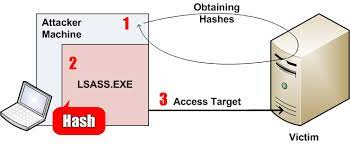
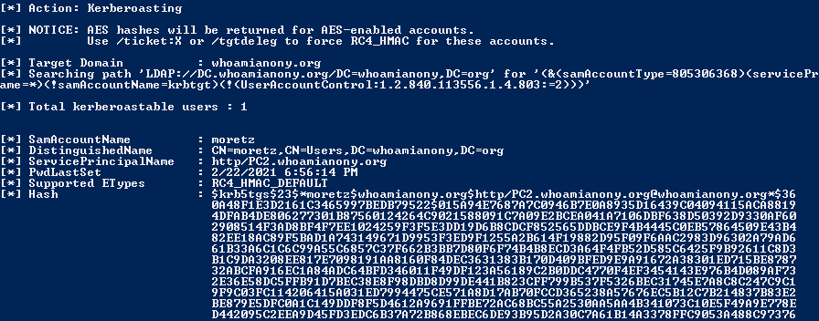

Kerberos Security
曾润铨
Created: 2024-07-02 Tue 09:43
Kerberos 协议
Kerberos 是由 MIT 研发的一种网络身份验证协议，用来在非安全网络中，对个人通信以安 全的手段进行身份认证
三种主要角色：
- 访问服务的 Client/User
- 提供服务的 Server
- 密钥分发中心 KDC
- Authentication Service
- Ticket Granting Service
认证流程
- AS-REQ：Client 使用 hash 加密当前时间戳，发送给 KDC
- AS-REP：KDC 若解密成功并且时间戳与当前事件差值小于五分钟，即通过 hash 确认用户 身份，则并返回一个短期会话密钥和 TGT
- TGS-REQ：Client 使用会话密钥构建访问特定服务的请求，连同 TGT 一起发送到 KDC
- TGS-REP：KDC 使用 krbtgt-hash 解密 TGT 和服务请求，然后如果请求被允许，则返回
一个服务票据（Service Ticket）。ST 包括两部分：
Server 部分：包含请求用户的 PAC、时间戳、TGT 有效期、会话密钥等
Client 部分：Client/Server 会话密钥
- AP-REQ：Client 把 ST 中 Server 部分和请求一起发送到远程服务器（通过会话密钥加密）
- AP-REP：Server 用自己的 Master Key 解密请求，获得 PAC 和会话密钥，返回一个加密
的时间戳示意验证完成
- PAC：Server 用 PAC 向 KDC 确认该用户是否有权限访问请求的资源（可选）
Pass The Hash
由于认证过程中是通过用户 hash 确认身份的，所以拿到 hash 我们就相当于拥有了该用户 的身份，而不需要知道明文密码

用户名枚举/密码喷洒
通过不同的错误码可以判断是用户名错误还是密码错误，利用这个特性可以对用户名、密码 进行猜解。为了避免用户被锁定，通常使用密码喷洒攻击（用固定密码登录多个用户）
AS-REP Roasting
如果用户设置了“不要求 Kerberos 预身份验证”，则可以发送 AS-REQ 请求来获取会话密钥， 然后通过离线爆破得到用户 hash
黄金票据
金票（Golden Ticket）是通过 krbtgt-hash 伪造的 TGT。只要有了高权限的 TGT，就可以发 送给 TGS 换取任意服务的 ST，可以说有了金票就有了域内的最高权限
制作金票的条件：
- 域名称
- 域的 SID 值（域用户 SID 删除最后一节）
- 域的 krbtgt 账户密码 hash
- 伪造的任意用户名
Pass The Ticket
Kerbreos 除了 ASERQ 是使用用户 hash 加密时间戳进行验证之外，其他步骤的验证都是通过 票据（TGT/ST)。因为票据里面的内容主要是 session key 和 ticket，拿到票据之后即可以用 凭票进行下阶段的验证
Kerberoasting
TGS-REP 中 ticket 的加密内容（encpart）是使用服务和 DC 共享的 hash 进行加密的， 所以攻击者获取 ST 后可以离线破解得到服务 hash
同理也可以通过 AS-REP 离线破解 krbtgt-hash, 但由于 krbtgt-hash 是随机生成的，只 存在理论可能性

白银票据
银票（Silver Tickets）是伪造的 ST（Service Ticket），因为在 PAC 里通过 SID 限定了给 Client 授权的服务，所以银票只能访问指定服务。由于伪造的 PAC 不带有有效的 KDC 签 名，如果服务主机配置了“验证 KDC PAC 签名”则银票失效
制作银票的条件：
- 域名
- 域 SID
- 目标服务器名
- 可利用服务
- 服务帐号的 ntlm-hash
- 伪造的用户名
委派攻击
非约束委派
在非约束性委派中，服务账号可以获取域用户的 TGT，并使用该 TGT 模拟域用户访问任意
服务。配置了非约束性委派的账户的 userAccountControl 属性会设置
TRUSTED_FOR_DELEGATION 标志位
场景
如果我们找到配置了非约束的委派的帐户，比如 PC1\(，并且通过一定手段拿下该帐户的权限， 然后诱导域管访问该 PC1\)，这个时候域管会将自己的 TGT 发送到 PC1$ 并缓存到 LSASS 中，那 攻击者就可以从 LSASS 中导出域管的 TGT，然后通过 PTT 使用域管权限
约束委派
微软为 Kerberos 协议的 TGS-REQ 和 TGS-REP 阶段引入了两个扩展协议 S4u2self（Service for User to Self）和 S4U2proxy（Service for User to Proxy）
场景
如果 Service 1 受到威胁，由于 Service 1 配置了到 Service 2 的约束性委派，则攻击 者可以利用 Service 1 代表域管理员用户访问 Service 2。如果 Service 2 位于域控制器， 例如域控的 CIFS、LDAP 等服务，那么就可以直接获取域控制器权限
PAC
MS14-068
签名原本的设计是要用到 HMAC 系列的 checksum 算法，也就是必须要有 key(krbtgt-hash)的参 与。但由于其实现的问题，导致用户可以指定任意签名算法，KDC 服务器就会使用指定的算 法进行签名验证。因此可以利用不需要相关密钥的算法如 MD5，实现 PAC 内容的任意更改